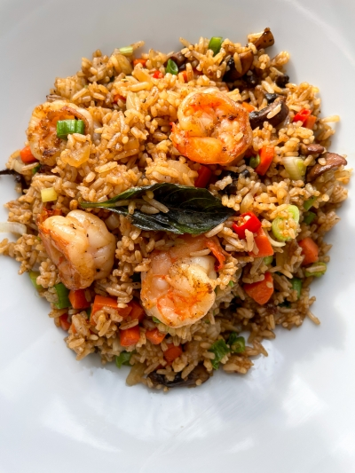

Garlic Chicken Fried Brown Rice
Home

The following recipe is for cooking some delicious garlic and chicken fried rice!
Fried rice is a simple dish that you can make as fast as you can read this article. It's delicious and nutritious and super easy to follow. Let me show you how to make it!
First, we will need to prepare some ingredients.
You will need:
- 2 tablespoons vegetable oil, divided
- 8 ounces kinless, boneless chicken berast, cut into strips
- 1/2 red bell pepper, chopped
- 1/2 cup green onion, chopped
- 4 cloves garlic, minced
- 3 cups cooked brown rice
- 2 tablespoons light soy sauce
- 1 tablespoon rice vinegar
- 1 cup frozen peas, thawed
Now for the fun part: making it!
- Heat 1 tablespoon of vegetable oil in a large skillet over medium heat.
Add chicken, bell pepper, green onion, and garlic. Cook and stir
until chicken is cooked through, about 5 minutes. Remove chicken mixture to
a plate and keep warm.
- Heat remaining 1 tablespoon oil in the same skillet over
medium-high heat. Add rice; cook and stir to heat through.
Stir in soy sauce, rice vinegar and peas and continue to cook
for 1 minute. Return chicken mixture to the skillet; stir to
blend with rice. Cook until heated through before serving.
And that's it. No, like literally, that's it. I told you it would be easy.